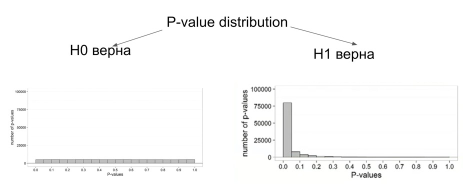
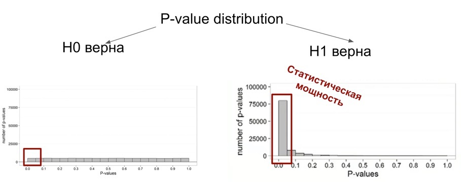
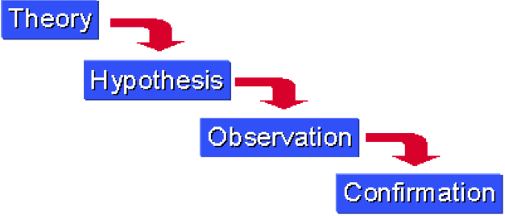
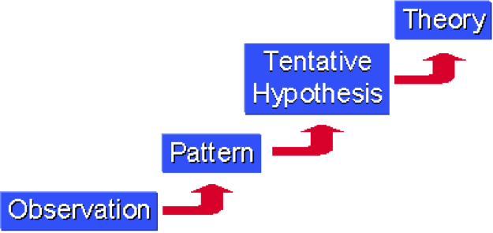
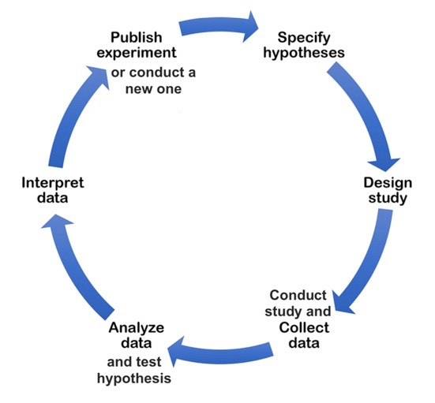
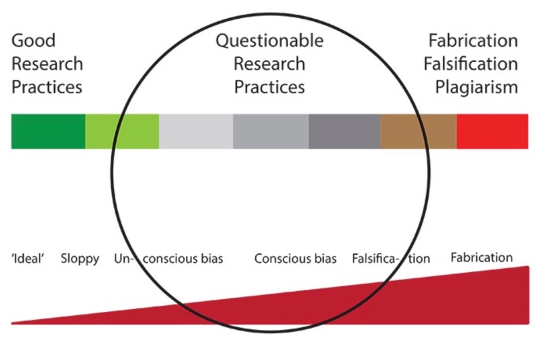
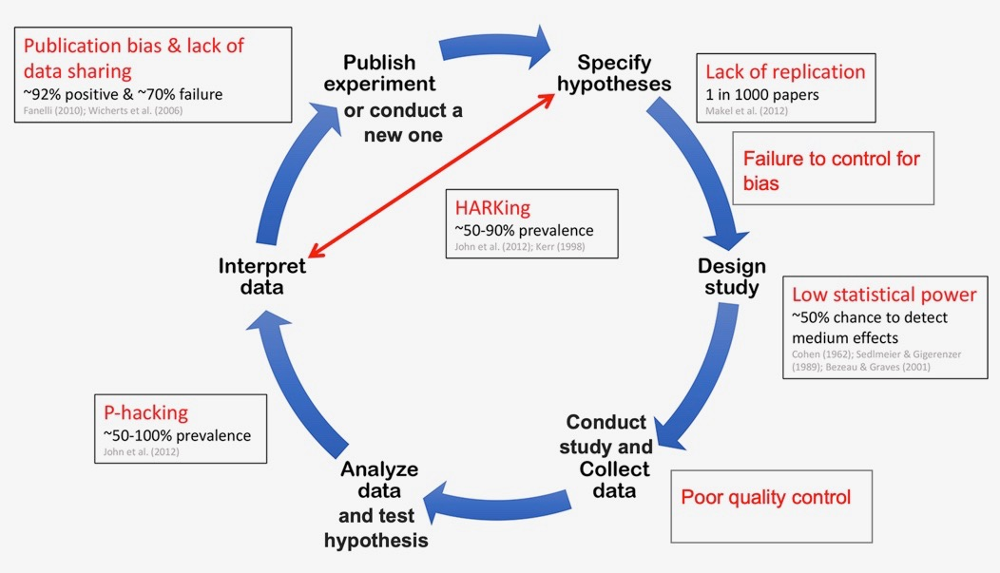
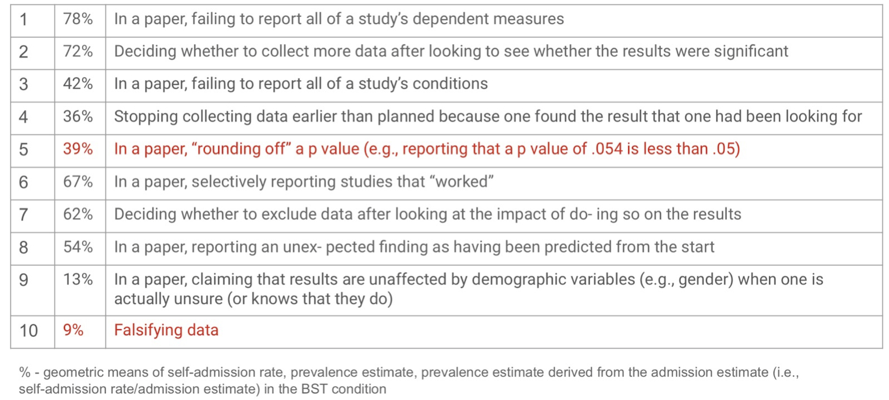
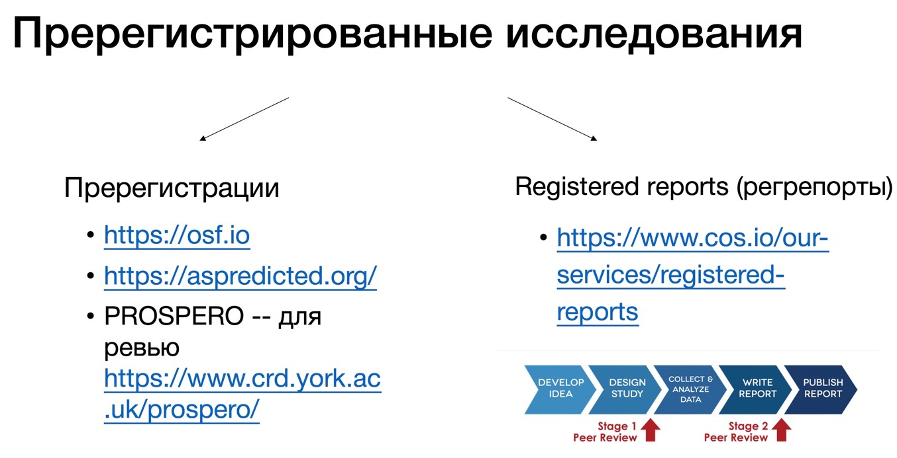

11 Статистики вывода: главные понятия перед расчетом статистических тестов
Проведен расчет выбранного статистического критерия с помощью выбранной функции
Вид полученных результатов понятен для интерпретации, и результаты согласуются с представлением о том, как они должны выглядеть
Результаты визуализированы, так, чтобы их было легче правильно воспринять
Результаты проинтепретированы и сделан вывод относительно статистической и экспериментальной гипотез
Итак, мы шли через весь чек-лист и готовились к самому главному – расчету выбранного статистического теста. Он даст нам несколько заветных цифр (значение самой статистики или коэффциента и p-value), по которым мы можем сделать вывод о связи между НП и ЗП, о различиях между группами или о вкладе какого-либо фактора в изменчивость наблюдаемых проявлений, в завимости от гипотезы.
Что мы сделали (в идеале):
- Сформулировали теоретическую гипотезу (даже несколько)
- Выбрали исследовательский метод, в котором ее можно проверить
- Перевели теоретическую гипотезу на язык исследования и сформулировали эмпирическую гипотезу
- Выбрали статистический метод, которым будем проверять гипотезу
- Получили представление, как будут выглядеть собранные данные после проведения исследования
- Собрали данные
- Предобработали данные
- Посмотрели на ЗП и НП, участвующие в нашей гипотезе, посчитали для них описательные статисики, сделали описательные визуализации, сравнили их с нашими ожиданиями
Теперь можем проводить расчет статистического метода!
11.1 p-value и сравнение с α
p-value - вероятность получить такие (или более выраженные) различия, если нулевая гипотеза верна.


11.2 Questionable and good research practices
Лирическое отступление о том, как делать хорошие исследования, и как глобально понять, делаются ли эти хорошие исследования?
Есть два подхода к производству научного знания:
- гипотетико-дедуктивный, когда мы сначала анализируем общую теорию, выдвигаем конкретные гипотезы и проверяем их.

- индуктивный, когда мы замечаем конкретные частные наблюдения, и на их основании строим теорию, которая объясняла бы эти наблюдения. 
Оба подхода жизнеспособны и зависят от задачи. Мы чаще работает в гипотетико-дедуктивном подходе, потому что большинство наших исследований – конфирматорные, когда мы выдвигаем гипотезу, и нам нужно ее проверить. Но когда у нас нект конкретной гипотезы, мы хотим просто поисследовать область и провести эксплораторное исследование – то речь будет идти об индуктивном подходе.
Производство научного знания выглядит так



 John, L. K., Loewenstein, G., & Prelec, D. (2012). Measuring the Prevalence of Questionable Research Practices With Incentives for Truth Telling. Psychological Science
Использование сомнительных исследовательских практик (questionable research practices) значительно увеличивает вероятность сделать ложноположительный (false-positive) вывод в своем исследовани.
Чему, как правило, равна вероятность сделать ложноположительный вывод? Это уровень значимости \(\alpha\). Почему она может увеличиться, если мы поо умолчанию выбрали \(\alpha = 0.05\)?
Исследование, которое провели Simmons, Nelson, & Simonsohn, 2011 называется “False-positive psychology: Undisclosed flexibility in data collection and analysis allows presenting anything as significant”. В этом исследовании они осознанно применяли сомнительные исследовательские практики, считали статистические тесты с их учетом (например, выкинув одну из переменных), проводили много-много симуляций таких тестов и затем сравнивали результаты с теми, которые они получили бы, если бы проводили анализ по всем правилам. Самые впечатляющие результаты:
- Манипуляции с выбором зависимых переменных (тестировали две, но выбрали только одну) увеличивают вероятность ложноположительного вывода с 5% до 9.5% (и согласно другому исследованию, около 78% психологов так делали (John et a., 2012)!
- Манипуляции с выбором экспериментальных условий (тестировали в трех, но выбрали только два из них увеличивают вероятность ложноположительного вывода с 5% до 12.6% (42% исследователей скорее всего через это проходили (John et a., 2012)
- Манипуляции с размером выборки (optional stopping, посмотрели на данные после 20 испытуемых, если не значимо — стали добирать и смотреть после 21, 22, 23 и тд испытуемых) увеличивает вероятность ложноположительного вывода с 5% до 50% (62%-72% исследователей исследователей использовали такую практику (John et a., 2012)
- Комбинация (1) + (2) + (3) увеличивает вероятность ложноположительного вывода с 5% до 60.7%
Почему еще это плохо, не только для текущего исследования, но и для всей области? Во-первых, если в литературе появляется ложноположительный вывод — его сложно полностью опровергнуть, он остается в литературе практически во всех случаях. Исследователи продолжают целые линии экспериментов, основанные на ложноположительных результатах. Во-вторых, ложноположительные выводы стимулируют publication bias – публикацию только тех исследований, в которых подтвердились гипотезы. Выходит, что исследователи немного экстрасенсы и могут выбирать для исследований только те гипотезы, которые наверняка подтверядся. В-третьих, если ложноположительные резульататы в ветви исследований были обнаружены, это подрывают доверие ко всей линии.
Good research practices
- Решать, когда останавливать сбор данных, до начала эксперимента. Правило, на котором это решение основано, должно быть указано в статье (расчет выборки на основании statistical power, анализ данных с использованием sequential analysis etc).
- До эксперимента решать, на каком основании и по каким правилам будут производиться выбросы данных, и указывать это в статье.
- Принимать решение о том, как данные будут обрабатываться, до начала эксперимента.
- В статье указывать все переменные и все экспериментальные условия, которые участвовали в эксперименте (даже если они оказались незначимы)
- Пререгистрировать исследование (хотя бы для себя).
- Постоянно прокачивать навыки в статистике и анализе данных. Это база, верхней границы навыка не существует.
